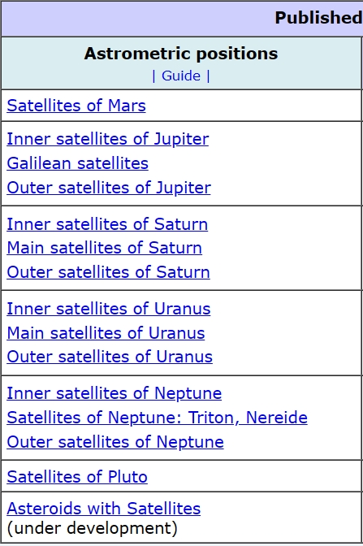

NSDB.imcce(跳转原网站)
网页介绍
×
本网页是NDSB.imcce网页中关于Astrometric positions内容的本地化展示。
汇总了二级页面内的所有内容，包括reference、content、data

注意！！对于部分content中references里提及的原文章链接没有收纳，需移步原网站
目录
说明
Satellites of Mars
火星卫星
Inner satellites of Jupiter
木星的内部卫星
Galilean satellites
伽利略卫星
Outer satellites of Jupiter
木星的外层卫星
Inner satellites of Saturn
土星的内部卫星
Main satellites of Saturn
土星的主要卫星
Outer satellites of Saturn
土星的外卫星
Inner satellites of Uranus
天王星的内卫星
Main satellites of Uranus
天王星的主要卫星
Outer satellites of Uranus
天王星的外卫星
Inner satellites of Neptune
海王星的内部卫星
Satellites of Neptune: Triton, Nereide
海王星卫星：海卫一、海卫一
Outer satellites of Neptune
海王星的外卫星
Satellites of Pluto
冥王星卫星
Asteroids with Satellites
带卫星的小行星